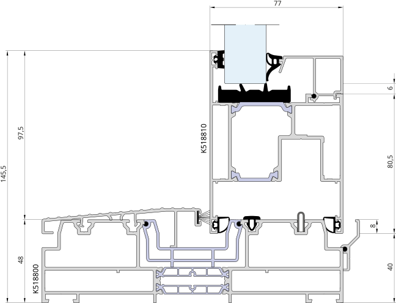

TECHNICAL EXPLORER · REAL SYSTEM / REAL SECTION
Instead of hiding a technical drawing in a PDF, we can turn the original vector section into an explorable piece of the website — precise enough for technical readers, clear enough for a homeowner.
Source used here: ALUPROF MB-77 HS · K518800 + K518810 · original SVG supplied for The Window Brief. Dimensions shown are the project-source values supplied with the drawing.

WHY THIS FORMAT MATTERS
This is where I want The Window Brief to feel different. The original manufacturer drawing remains the evidence. Around it we build explanation: what the viewer is looking at, which dimensions matter, what type of system it is, and later — where appropriate — how that detail relates to glazing, thresholds, screens, installation and Australian project requirements.
The manufacturer SVG stays available as the technical source rather than being replaced by an invented illustration.
Plain-English explanation can sit above the engineering detail without dumbing the subject down.
The same source can later power a full GUIDE with measurements, system comparisons and project notes.